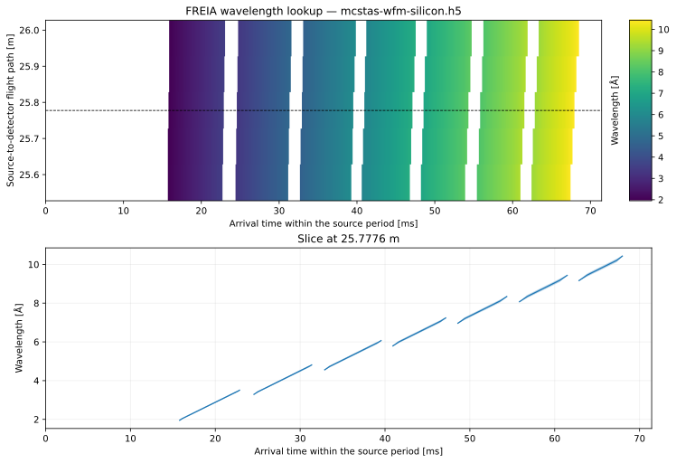

FREIA analytical wavelength lookup table#
Explore which wavelengths can reach the detector at each arrival time for the WFM chopper configuration. The table is computed from the instrument geometry and chopper settings.
[1]:
import plopp as pp
import scipp as sc
from scippnexus import NXdetector
from ess import freia
from ess.freia import data
from ess.reduce.nexus.types import DiskChoppers, Filename
from ess.reduce.unwrap import (
ChopperFrameSequence,
DetectorLtotal,
DistanceResolution,
LookupTable,
TimeResolution,
)
from ess.reflectometry.types import SampleRun
Use the WFM configuration#
Download the example WFM sample run and set the lookup-table resolution. The file is cached locally by pooch (pip install pooch). This example uses 20 µs time resolution and 10 cm flight-path resolution.
For a non-WFM run, insert freia.mcstas.non_wfm_choppers into the workflow after creating it: freia_mcstas.insert(freia.mcstas.non_wfm_choppers).
[2]:
filename = data.freia_mcstas_sample_run()
freia_mcstas = freia.FreiaMcStasWorkflow(wavelength_from='analytical')
freia_mcstas[Filename[SampleRun]] = filename
freia_mcstas[TimeResolution] = sc.scalar(20.0, unit='us')
freia_mcstas[DistanceResolution] = sc.scalar(0.1, unit='m')
[3]:
results = freia_mcstas.compute(
(
DiskChoppers[SampleRun],
ChopperFrameSequence[SampleRun],
DetectorLtotal[SampleRun],
LookupTable[SampleRun, NXdetector],
)
)
choppers = results[DiskChoppers[SampleRun]]
frames = results[ChopperFrameSequence[SampleRun]]
flight_paths = results[DetectorLtotal[SampleRun]]
lookup = results[LookupTable[SampleRun, NXdetector]]
print(f'Input: {filename.name}')
print(
f'{len(choppers)} disks; {len(frames.frames[-1].subframes)} transmitted subframes'
)
print(
f'Detector flight paths: {flight_paths.min().value:.4f} to {flight_paths.max().value:.4f} m'
)
print(f'Table shape: {lookup.array.sizes}')
Input: mcstas-wfm-silicon.h5
8 disks; 7 transmitted subframes
Detector flight paths: 25.7776 to 25.7812 m
Table shape: {'distance': 5, 'event_time_offset': 3573}
Wavelength as a function of arrival time and flight path#
The heatmap shows the wavelength assigned to each arrival time and flight path. White regions have no modeled transmission. The lower panel shows a slice near the middle of the detector’s flight-path range; shading spans the modeled wavelength bounds.
[4]:
table = lookup.array.copy()
table.coords['event_time_offset'] = table.coords['event_time_offset'].to(unit='ms')
midpoint = (flight_paths.min() + flight_paths.max()) / 2
slice_index = int(abs(table.coords['distance'] - midpoint).values.argmin())
line = table['distance', slice_index].copy()
heatmap = pp.plot(
sc.values(table),
title=f'FREIA wavelength lookup — {filename.name}',
xlabel='Arrival time within the source period [ms]',
ylabel='Source-to-detector flight path [m]',
cmap='viridis',
)
curve = pp.plot(
sc.values(line),
marker='',
linestyle='-',
linewidth=1.3,
title=f"Slice at {line.coords['distance'].value:.4f} m",
xlabel='Arrival time within the source period [ms]',
ylabel='Wavelength [Å]',
)
time = line.coords['event_time_offset'].values
half_width = sc.stddevs(line.data).values
figure = pp.tiled(2, 1, figsize=(10, 7))
figure[0, 0] = heatmap
figure[1, 0] = curve
figure[0, 0].cax.set_ylabel('Wavelength [Å]')
figure[0, 0].ax.axhline(
line.coords['distance'].value, color='black', linestyle='--', linewidth=0.8
)
figure[1, 0].ax.fill_between(
time, line.values - half_width, line.values + half_width, alpha=0.3
)
figure[1, 0].ax.set_xlim(0, lookup.pulse_period.to(unit='ms').value)
figure[1, 0].ax.grid(alpha=0.2)
figure
[4]:
